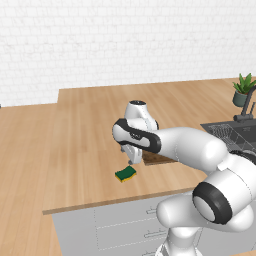
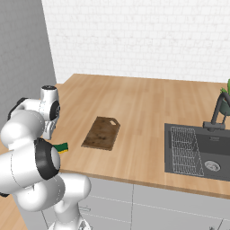
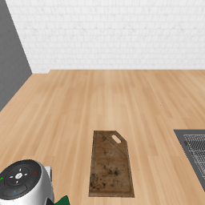
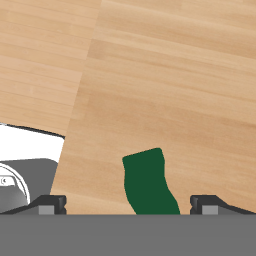

模拟器成功，视觉仍未确认
ScrubCuttingBoard / seed 1：3 次动作后原生成功，VLM 仍为 incomplete；Agent 调用 finish(success) 结束。
完整原始视频
本局原始录制视频；没有额外编辑或合成。只说明本局执行过程，不证明 VLM 导致成功。
动作边界记录
| Step | 动作 | 原生 success | VLM completion |
|---|---|---|---|
| 0 | initial | false | unknown |
| 1 | rldx_arm | false | incomplete |
| 2 | rldx_arm | false | incomplete |
| 3 | rldx_arm | true | incomplete |
视觉模型无法从端点图像确认 5 个不同接触位置及清扫范围；它还判断夹爪未充分远离海绵。模拟器原生条件已经成立，Agent 按原生成功结束。
终态四视角



